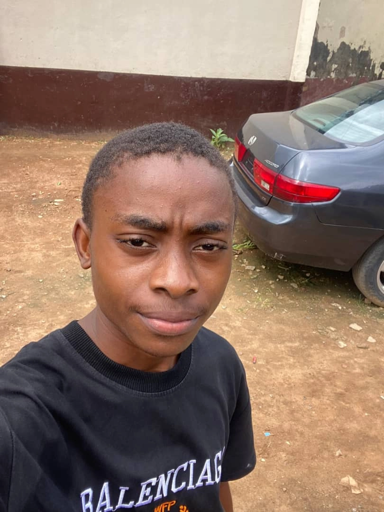

Bright Ikhifua Ifiok
About Me
Welcome to my WDD 131 landing page! I am currently pursuing my studies in Web Development, focusing on building dynamic and responsive web applications.

Nigeria
I am based in Nigeria. It is known for its vibrant culture, economic energy, and landmark architectural sites like the Lekki-Ikoyi Link Bridge in Lagos.